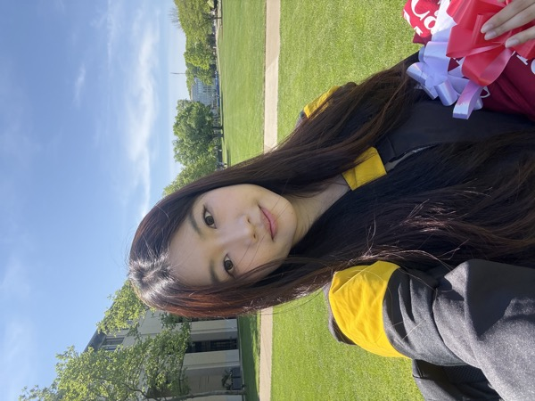

Zhitong (Payton) Guo
human 👭 agents 👭 earth 👭 universe
My work focuses on post-training and inference for Muse. I am currently a Research Scientist at Meta Superintelligence Labs.

human 👭 agents 👭 earth 👭 universe
My work focuses on post-training and inference for Muse. I am currently a Research Scientist at Meta Superintelligence Labs.